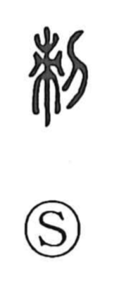

刺

Uncategorized
Kun: sasu, sasaru, soshiru, toge | On: shi
to stab ・ to pierce ・ thorn ・ sting ・ satire
Explanation
A phono-semantic character: the element 束 signals the reading shi and evokes a sharpened wooden stake, set up as a marker and also thrust in to pierce. From this image the graph takes the core sense of stabbing or piercing, including an insect’s bite or sting, and it naturally extends to barbed speech—severe reproach and indirect criticism—as in 刺譏 and 風刺/諷刺. The same idea appears in compounds for stabbing and assassins such as 刺殺 and 刺客.